On one side of Olive Avenue, a DUI stop can move at the speed of an expedited lab — blood drawn Saturday night, results back in under three days, a public apology from the chief of police. On the other side of the same street, people smoke meth in the open under a law California voters passed two years ago — a law that arrived with no money to enforce the very treatment it promises. Same sidewalk. Two legal systems. This is how that happened, and why it isn't an accident.
By Aaron Michael HightowerNovember 7, 2026Tower District, Fresno
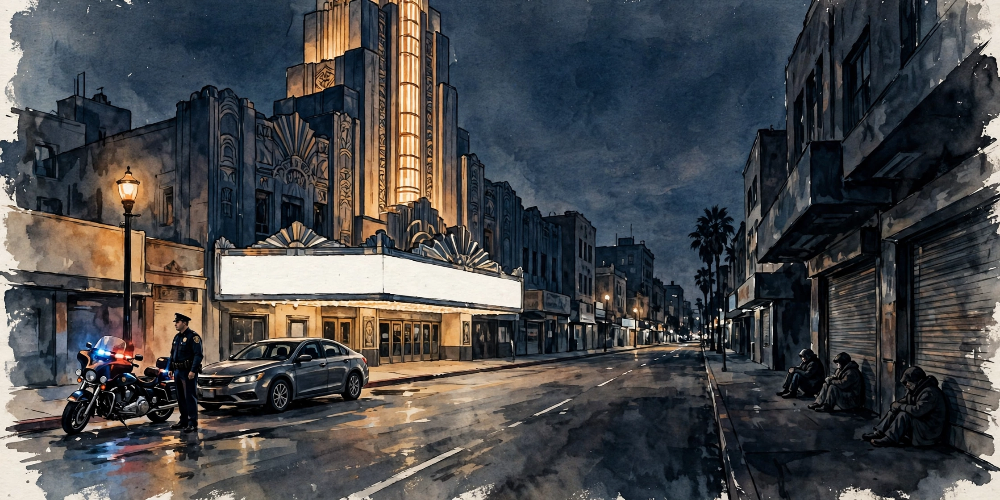
One street, two kinds of attention. Illustration for this story. On the left, the machinery of DUI enforcement — funded, staffed, and fast. On the right, the sidewalk the other law was written for, waiting on money that hasn't come.
$635,000
Federal grant funding for Fresno's Selective Traffic Enforcement Program — DUI checkpoints, saturation patrols, and officer overtime, Oct. 2025 – Sept. 2026.
< 3 days
How fast a council candidate's blood test came back once the lab was asked to expedite it. The normal wait: about three weeks.
8 of 101
In Fresno County in 2025, of 101 Prop 36 felony drug cases, just 8 people elected treatment. The rest went nowhere.
$0
Dedicated treatment funding written into Proposition 36 itself when voters passed it in November 2024.
I live in the Tower District, about half a mile from the Tower Theatre, and I watch this street the way you watch weather. So let me tell you what the last three weeks looked like from here — because if you only saw the headlines, you saw two separate stories. Out here, it's one story, and the seam between the two halves is money.
Chapter OneFirst, the shootings
How a nightlife district got a safety plan in a matter of hours
In the early hours of Sunday, October 18, someone fired nine shots outside the MIA nightclub on Olive Avenue, in the middle of the annual Zombie Crawl crowd. Two people were wounded. Police arrested a 16-year-old from Fowler the next day, after an hour-long standoff. It was the fourth shooting in the Tower District in six months.
The city's response was immediate and total. Mayor Jerry Dyer declared "zero tolerance for violence in the Tower." Within days there was a Tower District safety plan: more officers on weekend nights, contract officers posted in front of MIA, Vibez Lounge, and Bobby Salazar's, four mobile camera-and-light trailers, a curfew for minors after 10 p.m., a crackdown on club patios open past 10, street vendors moved into a designated lot, and sidewalks power-washed after 2 a.m. Fresno's weekend policing costs in the Tower had already exploded — the Fresno Bee put the increase at more than 900%.
Nobody should begrudge a neighborhood a fast answer to gunfire. But notice what the speed proves: when the city decides something is a priority, the machinery exists. Officers appear. Trailers appear. Overtime gets found. Keep that in mind, because the following Saturday night, that same machinery pulled over a man who was out watching it work.
And the October 18 shooting was not an isolated night. In my account, there was a shooting every week in the run-up to the public safety meeting being called — one after another, until the meeting itself became unavoidable. When the arrest from the shooting in front of Mia's surfaced, it surfaced the way violence surfaces now: as content. A Fresno Activities post reported that a 16-year-old Fowler Punjabi teen was arrested at his home and taken into custody at 11:44 p.m. Sunday in connection with a shooting that injured two people in the Tower District early Sunday morning. In the screenshot, the teen is wearing a hoodie that says Fresno Activities — which I describe, in my opinion, as one of the most popular groups on Facebook, one that monetizes and glorifies violence. His details were not released because he is a minor, and I am not naming him here; his face is blurred in the screenshot below, in this story, on purpose.
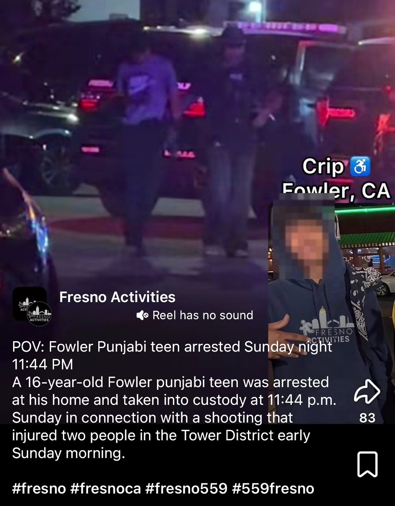
Screenshot: Fresno Activities. The post reports a 16-year-old arrested at home at 11:44 p.m. Sunday in connection with a Tower District shooting that injured two people. The minor's face is blurred here. My account: this was the shooter from the incident in front of Mia's, and the hoodie tells the rest of the story — everybody wants to see who is pulling the trigger, and the shooter becomes famous.
That fame is the engine, in my account. Police are hamstrung when it comes to enforcing against 16-year-olds, and against the people in jail called so-called SHOT CALLERS — and meanwhile the person who pulls the trigger gets highlighted, gets seen, gets famous as a gang banger. And people like me, who want law and order, get labeled a Trump supporter or a MAGA kind of guy just for expecting people to follow the law. That is the trade this street is being offered: attention for the violence, a label for the objection.
A week earlier, the same pattern ran in the other direction — a family, not a headline. ABC30 Action News carried Roxanne Armstrong, Tyrone's mother, under the caption "Family members man shot and killed in Fres..." In my account: a woman lost her son to gang violence just a week earlier, across the street from Mia's, shot dead by a 19-year-old shooter who was held to justice — and they say it was unrelated. One week after another. Glorification of violence on one side of the street, a mother on the other, and a city that does not seem able to control public safety at all — with the exception of DUI enforcement.
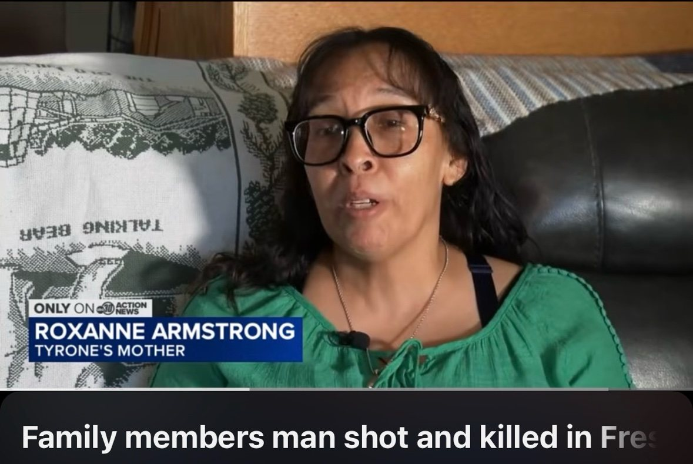
Still: ABC30 Action News. Roxanne Armstrong, Tyrone's mother. My account: her son was killed a week before the Mia's shooting, across the street from it, and the two were called unrelated.
So the safety meeting happened — the city in the room, listening. And here is my account of where the congressman was while it did. At the same time they were having the public safety meeting, Jim Costa was, in my account, boozing it up at Sequoia Brewery instead of doing his job listening to the safety meeting — while his rival, Kyle Kirkland, was at the safety meeting. Just like Jim won't show up for a debate, in my account, he's not showing up for the public safety meeting either, because he's already got a win booked and is celebrating there with his cronies. The image below is how that account gets illustrated — and it is labeled, in red, for exactly what it is:
AI-augmented illustration — not a real photograph
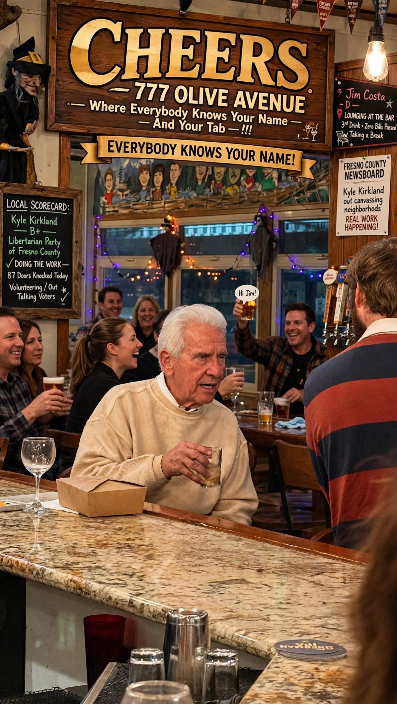
AI-augmented illustration — not a photograph, and not evidence Jim Costa was photographed at any bar. The illustration shows a "CHEERS — 777 OLIVE AVENUE" sign, a note reading "Jim Costa — LOUNGING AT THE BAR," and a Kyle Kirkland B+ scorecard from the Libertarian Party of Fresno County. It illustrates my account, stated in the text above: that while the public safety meeting was happening, Costa was celebrating a win he considered booked instead of listening. Presented as my illustrated account only.
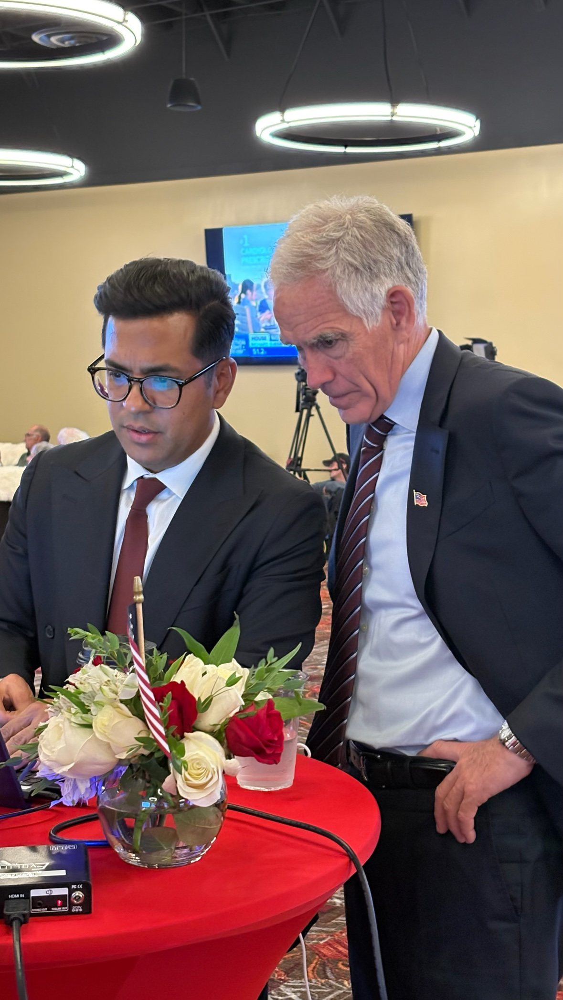
November 3, 2026, 8:19 p.m. Two men at a red table with a rose arrangement. I am not naming either man in this story, and I am not stating where this was taken, because I have not confirmed either for publication.
Chapter TwoSaturday night: the stop
Wishon and Olive, 11:54 p.m., October 24
Naindeep Singh — executive director of the Jakara Movement, a Central Unified school board trustee, and the leading candidate for Fresno City Council District 1 — was on his third consecutive day of observing the Tower District safety plan when a motorcycle officer stopped him at Wishon and Olive for an expired registration sticker. Singh says he had paid the registration back on June 19 and that his tags had been ripped off the car. What happened next is not in dispute, because the police chief laid it out herself:
Sat, Oct 24 · 11:54 p.m.
The stop
A motorcycle traffic officer — a trained drug recognition expert — runs Singh through field sobriety tests. Per Chief Mindy Casto, Singh fails six of eight indicators, including the walk-and-turn and finger-to-nose tests, with a pulse up to 128. A breath test for alcohol comes back negative.
Sat night · Community Regional
The blood draw
Singh agrees to a blood test at Community Regional Medical Center to screen for drugs. On his wife's advice — she is a health professional and was with him — an independent toxicology screen is run at the same hospital. He is released with two citations, not booked.
Mon, Oct 26
"I will be fully exonerated"
Singh holds a press conference in front of the Tower Theatre with his independent results in hand: no drugs in his system. His opponent, Rob Fuentes, had already sent a campaign text calling on him to drop out. The DA's office confirms police have not yet submitted any report or charges.
Tue, Oct 27 · Evening
Case closed — with an apology
Because the arrest was public, the department asked the lab to expedite the official test. What normally takes about three weeks came back in under three days: negative. Chief Casto holds a second press conference, apologizes to Singh as she had promised she would, and announces the case is closed, the arrest will be removed from his record, and his tow fees refunded.
Credit where it's due: the chief kept her word, in public, a week before an election. That almost never happens, and it should be said plainly.
But step back and look at what you just watched. A stop at 11:54 p.m. Field tests by a specialist. A hospital blood draw the same night. A lab that can be asked to hurry — and does. A chief, an apology, a refunded tow, a closed case, all in 72 hours. Whatever you think of the stop itself, that is what a fully funded enforcement lane looks like from the inside. It has people, training, overtime, lab priority, and a public-relations apparatus to close the loop.
"What normally could take three weeks, the test came back less than three days."
— Fresno Police Chief Mindy Casto's account, as reported by Independent in the Field, Oct. 27–28, 2026
Chapter ThreeFollow the money: the lane that is funded
DUI enforcement doesn't run on good intentions. It runs on a grant.
None of that speed is an accident of character. It's purchased. On September 25, 2025, the Fresno City Council authorized the police department to accept $635,000 from the California Office of Traffic Safety — federal highway money, passed through from the National Highway Traffic Safety Administration — for the Selective Traffic Enforcement Program (STEP), covering October 1, 2025 through September 30, 2026. (The prior year's STEP grant later picked up another $98,000 on top.)
Read what that money is earmarked to buy, because it's the whole anatomy of the fast lane:
What $635,000 buys
Overtime — so DUI checkpoints and saturation patrols can be staffed on top of regular shifts, on the nights that matter. Specialist training — Standard Field Sobriety Tests, Advanced Roadside Impaired Driving Enforcement, and Drug Recognition Expert certification: the exact expertise used at Wishon and Olive. Follow-through — warrant service and stakeouts targeting repeat DUI offenders and people who failed to appear. And a stated goal, written into the grant: reduce the number of people killed and injured in crashes involving impaired driving.
In 2025, forty-five people died in traffic collisions in Fresno, and the department reports roughly 80% of those fatalities involved someone under the influence of alcohol, drugs, or medication. The danger is real. So is the funding. That's the point: for this problem, society decided the danger was real and wrote the check.
There's an escalator built into this lane, too. Shootings in the Tower put more officers on Olive on weekend nights. More officers running traffic enforcement in a nightlife district means more DUI investigations — that's how a candidate out observing the safety plan ends up giving blood at Community Regional. Violence raised the priority; the priority was already funded; the funded machinery did what funded machinery does. Nobody in that chain had to ask where the money would come from. It was already there, line-itemed, with a grant number.
Now cross the street.
Chapter FourThe other law: Prop 36
The Homelessness, Drug Addiction, and Theft Reduction Act — passed by the voters, funded by nobody
In November 2024, California voters overwhelmingly passed Proposition 36. It partially rolled back Prop 47 and created a new charge: the treatment-mandated felony. Here's the mechanism, because the mechanism is where it breaks:
If a person has two or more prior drug convictions, prosecutors can charge simple possession of hard drugs — fentanyl, heroin, cocaine, methamphetamine — as a felony again. The defendant can then plead guilty or no contest and choose court-ordered treatment instead of up to three years behind bars. Finish treatment, and the case is dismissed. That's the deal voters thought they were buying: accountability with a door back out through recovery. "Mass treatment" was the promise.
Now the part that didn't make the campaign ads: Prop 36 contained no dedicated funding for any of it. Not for the treatment beds. Not for the assessments. Not for the courtrooms and public defenders and probation officers the new felonies would require. Counties were told to build the airplane after the voters had already pushed it off the cliff. Lawmakers later asked for $650 million to implement it. They got $100 million, one time — then another $50 million the following year for pretrial behavioral health and court workload, against estimates that full implementation needs something like $400 million.
Requested by lawmakers to implement Prop 36$650M
Appropriated — one-time funds$100M
Added the next year (pretrial & courts)$50M
Statewide implementation funding, as reported by CalMatters. Compare the DUI lane: $635,000 for one city's traffic program alone, renewed year after year through the Office of Traffic Safety.
Aaron's account
What I put in my own comment thread
I said this part out loud where my neighbors could read it — in a comment on my own thread, the one about not being invited to my own pizza party, because that's where the people in my group actually talk. In that comment I passed along the conclusions of Assemblymember David Tangipa after he listened to the Sacramento meeting where Prop 36 funding was on the table and did not come. His conclusion, as I relayed it: the will to fund the law the voters passed was not there.
And I set that next to what I believe Sacramento funds without blinking: millions of dollars of private protection for Governor Gavin Newsom, provided by the California Highway Patrol. That comparison — and that figure — is my account and my opinion, not an audited number, and I'm not presenting it as one. What is documented is the bar chart above it: the money for Prop 36 treatment that was asked for, and the fraction that showed up. Draw your own conclusion about priorities. I already have.
Chapter FiveWhat "goes nowhere" actually means
When people say Prop 36 cases go nowhere, this is the nowhere they mean
Start at the curb, because that's where the law first stalls. An officer watching someone use drugs openly on Olive Avenue can't charge the treatment-mandated felony on sight — the felony only exists if there are two prior drug convictions. Establishing those priors takes a records pull, time, and a prosecutor willing to file it. Possession without the priors is still a misdemeanor, and misdemeanors on a crowded weekend in the Tower are triage — the system walks past them to the next call.
Say the case does get filed. Now the treatment door has to actually exist: an assessment has to be scheduled, a program has to have a bed or a slot, the defendant has to plead guilty to unlock it, and somebody has to pay. In county after county, that chain breaks at the money link. The numbers tell it without any spin from me:
The treatment funnel, in numbers
Statewide: In Prop 36's first six-plus months, prosecutors filed 8,895 treatment-mandated felonies. About 15% of defendants — 1,290 people — elected treatment; 771 were actually placed; and just 25 people in the entire state had completed treatment and earned a dismissal by mid-2025, per the Judicial Council of California.
In the 15 busiest counties: Of 18,666 felony drug cases charged under Prop 36 last year, 17% involved a defendant who opted for treatment — and only 57 people completed it and had their cases dismissed (CalMatters analysis).
Here in Fresno County: Of 101 Prop 36 felony drug cases in 2025, only 8 people elected treatment. The other 93 didn't get the door the voters were promised. They didn't get prison either, in most cases. They got nowhere — a case in the system, a person back on the street, and nothing changed on the sidewalk where it started.
That's the sentence I keep coming back to, because it's the honest one: Prop 36 is not being defied. It's being starved. Officers know the felony path mostly leads to a treatment system that isn't funded to receive people, prosecutors know it, and the people living on the sidewalk know it best of all. A law everyone knows leads nowhere stops being a law. It becomes scenery.
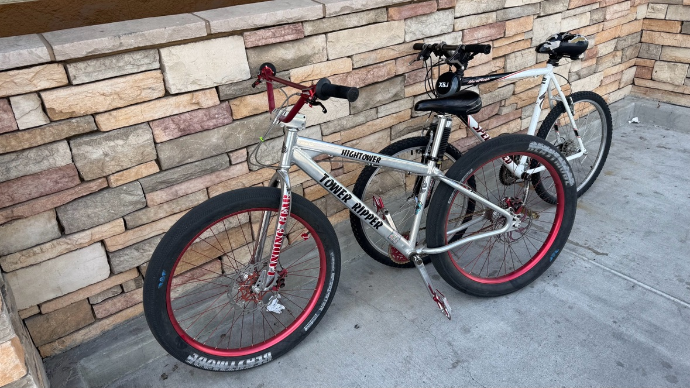
November 4, 2026, 12:39:26 p.m. My silver bike in front — HIGHTOWER and TOWER RIPPER on the frame, red rims, LANDING GEAR on the fork. The white bike behind it is Bereket's. We took this the same day we later ran into Chief Casto at City Council, after leaving this area to go to council.
Aaron's account
The conversation outside City Hall
Start with the timestamps, because they establish how this afternoon actually ran. The bikes photo above is November 4, 2026, at 12:39:26 p.m. Thirty-three seconds later, at 12:39:59 p.m., I took the downtown photo below — the Security Bank tower and the Smart & Final, the same afternoon, the same few blocks. From there, Bereket and I left that area and went to City Council. That is the afternoon that ended with the two of us standing outside council, and with what happened next.
This part is mine — my account of a conversation, told the way it happened to me. I was standing outside City Council talking with my friend Bereket — of Ethiopian descent, a good gentleman who believes in law and order the way I do — about an idea the two of us were kicking around: a vibe-coded app that would let an officer establish a person's two prior drug convictions right there, so the officer would know on the spot who could actually be sent into the system on a Prop 36 felony and who couldn't. In other words, fix the priors problem in Chapter Five with a phone instead of a prayer.
While we were standing there talking about it, Chief Mindy Casto came out — and she definitely overheard us. Maybe nothing comes of that. But I don't believe I was standing in that spot, having that exact conversation, at that exact moment, by accident. I was led there by my higher power to have that conversation at that moment. That's not a reporting claim. That's my faith, and it's part of why this story exists.
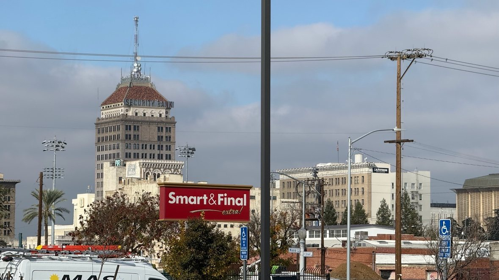
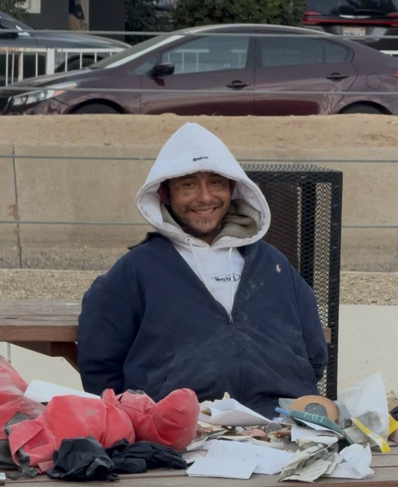
Left: downtown Fresno, November 4, 2026, 12:39:59 p.m. — the Security Bank tower and Smart & Final, thirty-three seconds after the bikes, on the way to council. Right: from that same week — a man in a white hoodie and navy jacket at a picnic table, red bag and papers in front of him, November 6, 2026, 6:16:56 p.m. I am not putting a name to him here, because the photo doesn't need one to belong to that week.
Walk both stops
Same Saturday night, same few blocks of the Tower. Pick a lane and step through what actually happens — at the curb, at the lab or the courthouse, and at the end.
Step 1 of 4
Lane One · Funded
DUI enforcement
Money$635,000 federal STEP grant for Fresno alone, renewed annually through the Office of Traffic Safety.
PeopleGrant-paid overtime; officers certified in field sobriety testing and drug recognition.
At the curbStop, field tests, breath test, same-night hospital blood draw.
SpeedLab results in under 3 days when expedited. Normal turnaround ~3 weeks.
The endA filed case, a closed case, or — when the system gets it wrong — an apology from the chief and a refunded tow.
Lane Two · Unfunded
Prop 36 drug cases
Money$0 dedicated funding in the measure voters passed. $100M one-time statewide, against a $650M request.
PeopleCounty treatment systems told to absorb a new felony caseload with no new capacity guaranteed.
At the curbNo felony at all unless two prior drug convictions can be established.
SpeedFresno County: 8 of 101 felony cases reached treatment.
The endStatewide, 57 completions and dismissals out of 18,666 cases in the busiest counties. The rest go nowhere.
Chapter SixThe sidewalk in between
Penal Code 647(c), the Thursday-to-Monday crowd, and why the bars are the magnet
Between those two lanes is the sidewalk itself, and what happens on it every weekend. There's a rhythm to it that anyone who lives here can set a watch by: the crowd arrives Thursday afternoon and leaves Monday morning. Not because of the weather. Because that's when the bar traffic runs — and where drinking traffic runs, the panhandling and the scams follow, the same way they follow the traffic at a 7-Eleven, a Dollar Tree, or a Walmart. Drunk people coming out of a bar at closing time are, plainly, easy marks. Everybody working that sidewalk knows it. The people doing it aren't getting rich. It's scraps. But it's reliable scraps, and reliability is the whole business model.
The law has something to say about this, on paper. California Penal Code § 647c reads, in full:
Penal Code § 647c
"Every person who willfully and maliciously obstructs the free movement of any person on any street, sidewalk, or other public place or on or in any place open to the public is guilty of a misdemeanor."
Note the nuance, because it matters: asking for money is protected speech. What the law actually criminalizes is obstruction — willfully and maliciously blocking someone's movement. Sitting with a sign is not the crime. Body-blocking a drunk patron on the sidewalk outside a bar, following, accosting, refusing to let people pass — that can be. So the conduct residents complain about sits right at the edge of a statute that requires proof of intent, filed as a low-level misdemeanor, in the lane with no dedicated funding and no overtime grant behind it. Guess how often it's the priority on a Saturday night when the funded lane is running checkpoints.
And watch how the blame travels. The bar owners point at the people on the sidewalk. The city points at the bars and threatens their patios. The state points at the counties. The counties point at Sacramento's empty checkbook. Everyone in that chain is describing the same street — and everyone has found the one direction to point that isn't at their own ledger. Meanwhile the actual pattern never changes, because the pattern isn't caused by any one of them. It's caused by traffic, alcohol, addiction, and a treatment law with no treatment in it, all meeting on the same few blocks every Thursday.
The Sidewalk, Up CloseThe Dollar Tree doorway
Fresno Municipal Code 10-2101, a paper bag, a lit cigarette, and a five-year-old
The sidewalk has a local law, too — Fresno Municipal Code 10-2101, the city's sit / lie / sleep / camp rule. On paper, it says the doorway of a store is not a campsite. In practice, on this street, it is scenery — and I have the photographs and the video to show you what "scenery" means.
On November 3, 2026, at 1:36:25 p.m., a man was lying at the Dollar Tree entrance with a paper bag over his head, a bowl of food and a plate beside him, blocking the way in. Not near the door. At the door — the one door everybody has to use. In the close-up from that same doorway, a hand holds a lit cigarette next to a paper bag, and the smoke sits right in the path of a five-year-old child holding her mother's hand as she walked into the Dollar Tree. Here is my account of the man, stated as my account: he was pretending to be mentally ill; he said I was harassing him; and in my account he is guilty of crimes that simply don't get enforced, a public nuisance because of the lack of Prop 36 enforcement. I am not calling him a drug user from these photographs, because a photograph can't tell you that. What it can tell you is that the entrance was blocked, in the middle of the day, and nothing about the funded machinery on this street had anything to say about it.
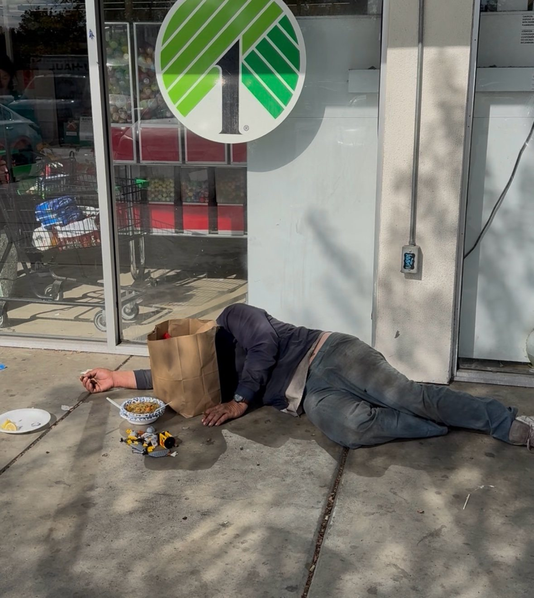
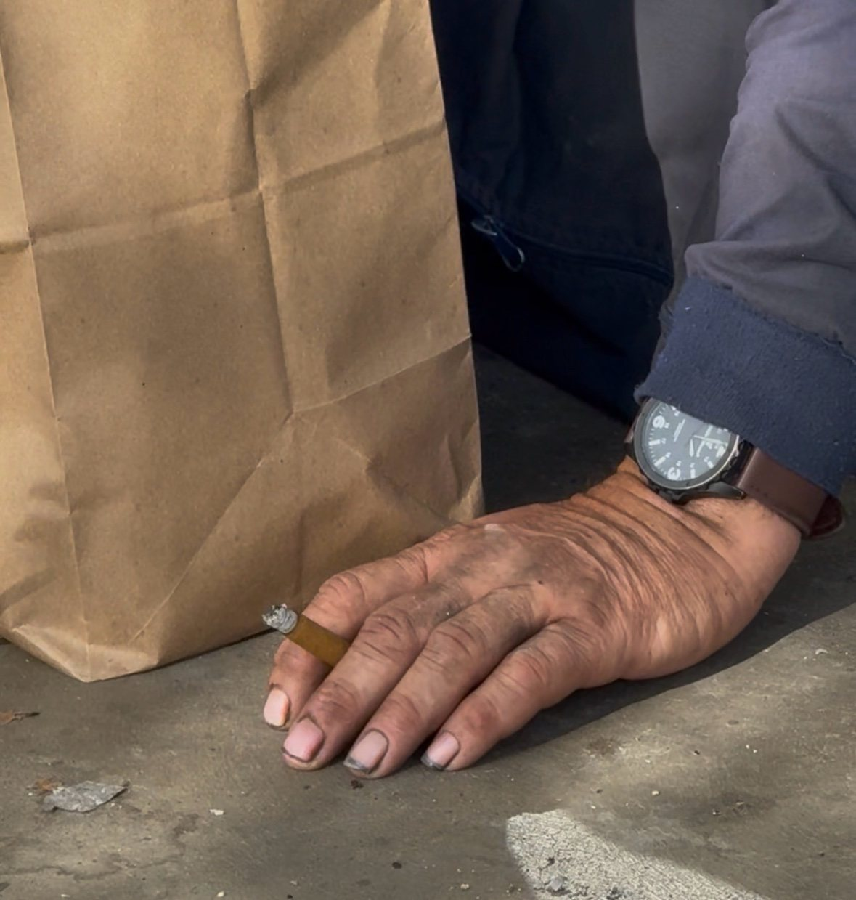
Left: the Dollar Tree entrance, November 3, 2026, 1:36:25 p.m. — a man lying at the door with a paper bag over his head, a bowl of food and a plate beside him. Right: the close-up — a lit cigarette beside the bag, in the path customers, including a five-year-old holding her mother's hand, had to walk through.
And I didn't just photograph it. I filmed the whole interaction, unedited — because I know how this gets flipped. Isaiah 5:20 names it: woe to those who call evil good and good evil. In my account, that is the flip-the-script move I run into on this sidewalk — the man blocking the door says he is being harassed, and the man documenting it becomes the problem. So here is the documentation, all ten minutes of it, exactly as it happened:
"SIT LIE SLEEP" — my unedited, roughly ten-minute video of the entire interaction at the Dollar Tree entrance. If the player doesn't load, watch it on YouTube: youtu.be/G8MaAU5iU6o.
The doorway is one version of it. The ATM is another. Two people lying by an ATM with yellow bollards — one slumped against the wall with a backpack, one in plaid stretched out on the raised platform — directly in the path of anyone who needs the machine. I am not going to tell you whether they were asleep or passed out, because the photo doesn't say, and I am not calling it drug use from the photo alone. In my framing, it doesn't need a diagnosis: it is a problem caused by a lack of enforcement — of the sit/lie rule, and of Prop 36 behind it.
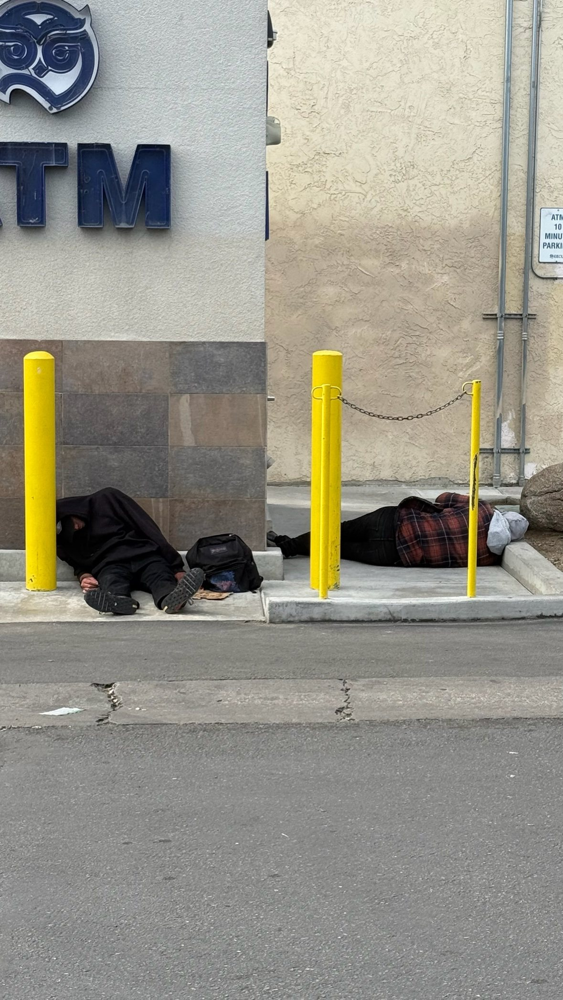
The ATM. Two people lying between the yellow bollards, in the path of ATM traffic. No diagnosis offered — the obstruction is the point.
And when the police are at the Dollar Tree? In my observation, their cars sat in that parking lot while vagrants begged in the same parking lot, completely overlooked. The funded lane was present. It was just pointed the other way — the way it is always pointed.
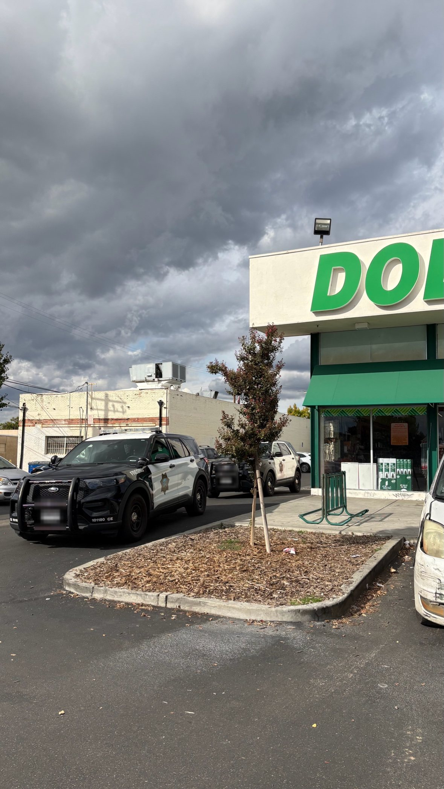
Police at the Dollar Tree. My observation: the begging in that parking lot went completely overlooked. License plates blurred.
Walk a few steps to the bus stop and the scene repeats itself, because on this street it is not an incident — it is the furniture. A person slumped over on the bus bench near the Dollar Tree, belongings around them. I describe this as a common scene, and I describe how it appears to me; I am not handing you a diagnosis of a stranger from a photograph. I am telling you that a resident of this district sees this, at this bench, as a matter of routine — and that routine is what an unenforced law looks like after a year.
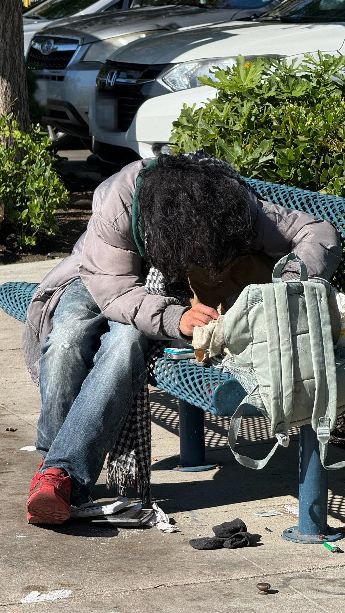
The bus bench near the Dollar Tree. A common scene, in my account. License plates blurred.
Now the optics, because the optics are the other half of the sidewalk economy. People drive to this same Dollar Tree to hand out free food — I photographed the cars myself, with my own caption on the photos: "handing out free food at the dollar tree." One is a dark car; the other, a blue Toyota, November 3, 2026, at 12:59:07 p.m. The license plates are blurred in this story, because the plates were never the point. The point is the circuit: food handed out at the door of a store whose doorway is a campsite, photographs taken, everybody feeling like something was done — while the laws that would change the scene itself sit unfunded and unenforced a few feet away. Remember these two cars. They come back at the end of this story, because in my account they are the end of this story.
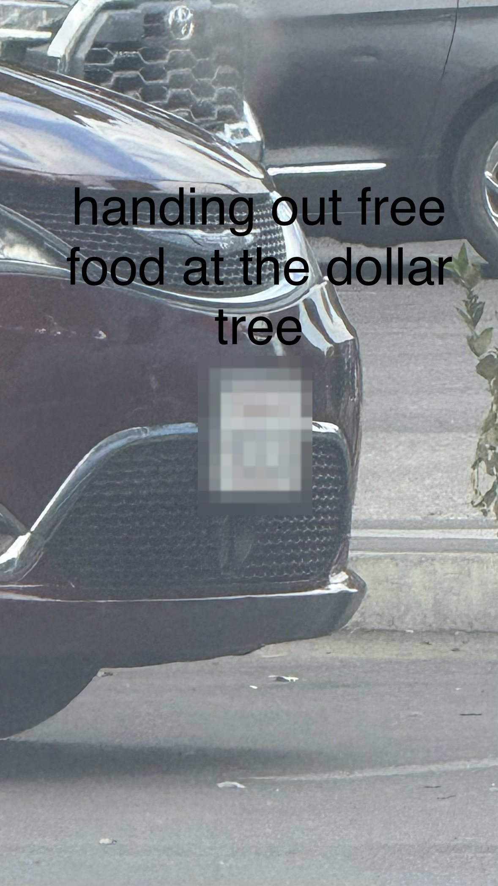
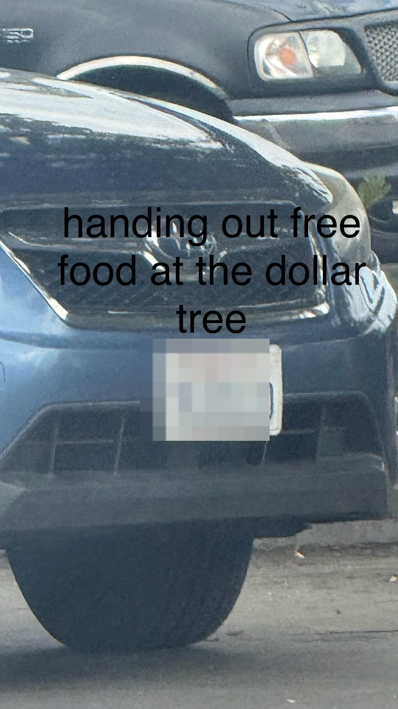
The optics, in my own photographs and my own overlaid words. Handing out free food at the Dollar Tree. License plates blurred — the cars are the point, not the plates.
The Sidewalk, Up CloseThe calls nobody answered
The blue canopy across from the Tower Theatre, Penal Code 415, and a restraining order nobody will serve
Aaron's account
The man under the blue canopy
Across from the Tower Theatre, there is a man who, in my account, lives in his car and sells things under a blue canopy. This is the Wishon & Olive ring seller. Here is the pattern, as I have lived it and as I am stating it — my account, not a court finding: he assaulted me, and in my opinion he has committed Penal Code 415 — though that has not been proven in a court of law, and I am saying so in the same breath. I believe he is trying to start fights with me because he doesn't like what I am saying about so-called homeless people who violate the law and get away with it.
So I called the police. And called. The screenshots below are my own call history — the record of a resident trying to get an answer out of the unfunded lane. In my account, the police don't respond because it is not a priority, because they don't have any money. I waited in my hot car. I complained. Then, after consulting with the law, I decided to get a restraining order. So let the record be exact, because exactness is the whole point of this story: I filed. The restraining order was not granted. And now nobody wants to serve the gentleman. A filing is all there is. Anyone who tells you there is an order in force is telling you more than the court did.
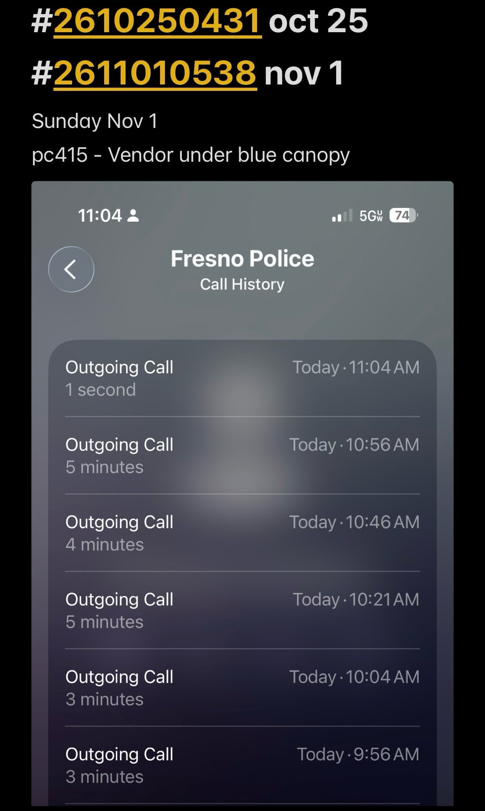
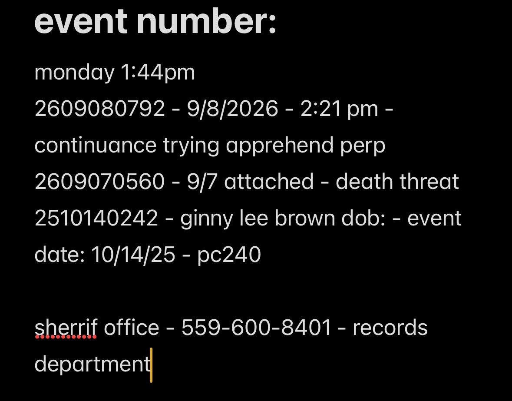
My call record. Event numbers and call history from my own phone — including the PC 415 entry for the vendor under the blue canopy. This is what reporting it looks like from the resident's side of the line.
The Sidewalk, Up CloseThe neighbor who had to move
Kathryn L. Barile, The Brass Unicorn, and two addresses on Van Ness
This is not abstract for my neighbors either, and one of them has a name I want spelled right, because she has earned that much: Kathryn L. Barile — Kathryn with a K. She is my neighbor; she lives on Yosemite, just one block south of me, and she runs The Brass Unicorn. The shop used to be at 845 E Fern Ave, at Fern and Maroa. It is now at 1007 N Van Ness Ave, at E Elizabeth St — right across the street from the Fresno Police Department Credit Union at 1004 N Van Ness Ave. Read that again: she moved across the street from the police's own credit union.
Here is my account of why: she was forced to relocate. A shopkeeper does not leave an address she has built a name at because the new place has better light. In my account, the city does not seem able to control public safety — with the exception of DUI enforcement — and when a street becomes unmanageable, the businesses that can move, move, and the ones that can't, close. Kathryn moved. Keep her in mind, too, because she is standing at the end of this story right next to those two cars at the Dollar Tree.
Chapter SevenThe same argument, at City Hall
Fires, eminent domain, and one sentence from the dais
If you want to hear this whole story compressed into a single sentence, a councilmember already said it. During a February council meeting — the council deep in discussion about the fires around the city's eminent-domain takings near Blackstone and McKinley — Councilmember Miguel Arias said, in council, in public:
"I refuse to equate homelessness with drug usage."
— Councilmember Miguel Arias, in Fresno City Council, as I heard it and recorded it
I call that sentence disingenuous, and dishonest — and that is my characterization, stated as mine. Here is why: the city manager directs the police department, and the asymmetry this whole story is about comes from the dais — from the city manager specifically — not from Mindy Casto and her crew. Refusing to equate homelessness with drug usage, from the dais, on the same February day the Fresno Bee reported the city manager's "spidey senses" and the council sat discussing fires tied to eminent domain — that isn't a principle. It's a way of making the connection unsayable in the one room where saying it would cost somebody something.
Hold that sentence up against the documented backdrop. The vacant Carl's Jr. at Blackstone and McKinley — a building the city itself had seized through eminent domain and closed in December — was destroyed by fire on January 28. Another nearby city-owned vacant building burned on February 8. On February 13, the contents inside the tile shop down the street caught fire. Three buildings, one intersection, about two weeks — and authorities suspecting arson, as Fresnoland reported. The morning after the Carl's Jr. fire, City Manager Georgeanne White told the council, in a line the Fresno Bee carried and I wrote up in my earlier story The Taking: "My spidey-senses were tingling on Carl's Jr. I was pinging the staff, saying, 'When are we demoing? When are we demoing?' I knew this would happen."
She knew it would happen. The building burned anyway. And here is my account of what I watched happen around that — labeled as my account, because it is: I believe she was pretending she was not aware of the probability of homeless people setting fires to the Carl's Jr. and to the tile shop, and using the media to manipulate the public into believing the city had nothing to do with those places burning down — when the fires benefited the city by expediting a project that was stuck. A city manager's hunch gets the cute name. The fires get treated as weather. And a councilmember announces, as a principle, that he refuses to connect the people sleeping in and around those vacant buildings to the drug use everyone in this city can see with their own eyes. Refusing to equate them doesn't make the meth disappear. It just makes the sentence unsayable in the room where the money gets decided.
Aaron's account — not court findings
What happened to the tile man
The tile shop is the one at 1780 East McKinley — A and C Tile. Here is what is documented: the city sued for the property in July 2024 to make way for the Blackstone–McKinley grade separation project, and in March 2025 a court ordered ownership of the building transferred to the city. The owner told the court that relocating would cost him $3.4 million to $7 million.
And here is my account of the rest of it, which I am stating as my account and not as any court's finding: they destroyed that man's reputation by accusing him of being a criminal, in court cases where they seek funds, and they bled him dry with false allegations about his intent — claiming he was trying to slow the process down. The reality, as I see it, is that the city split his property into two, and now he cannot even get onto his own property without potentially being trespassed, because the city has taken ownership of part of it through eminent domain — and he has been blocked from simply taking his inventory somewhere else by the plain financial fact of what it costs to move all of that material. A man who ran a tile business at that corner since the nineties, boxed out of his own shop, with his life's inventory sitting inside a building he no longer controls — part of which then caught fire. Tell me again how the process is the point.
Then, at a later date, they claimed he was difficult to work with — and they used the word criminal in association with his situation. That, in my account, is a label that was forced on him by the environment they created: take part of a man's property, block his access to the rest, make moving his inventory financially impossible, and then treat the cornered man as the problem.
It is the same labeling move I have watched in the funded lane. They took me in for a DUI. They took Singh in for a DUI. The label lands first — criminal, difficult, impaired — and the expensive process of clearing your name lands on you. And here is the connection I am drawing, stated as my belief: all of that DUI funding is being used to make life hell for people who happen to land in eminent-domain territory for their corrupt bullet train — which I believe is why they are trying to get access to that land over there. That motive is my conclusion, not a document I can hand you. The split property, the blocked access, the court fight, and the criminal label are the facts as I have lived and watched them. Connect them the way I have, or don't — but don't tell me the pattern isn't there to be seen.
Chapter EightWhy this isn't abstract for me
I've said it before and I'll say it here, in my own story, in my own words: I was prosecuted for a DUI, while people smoke methamphetamine in the open on these same streets and nothing happens. I'm not asking for my case to be re-argued, and I'm not asking anyone to feel sorry for me. I'm pointing at the asymmetry, because once you've stood in the fast lane yourself, you cannot unsee how empty the other lane is. The system that processed me had forms, funding, specialists, deadlines, and consequences. The system that processes the sidewalk outside the bars has a voter-approved promise and an appropriation that covered about fifteen cents on the requested dollar.
And I'll name where it lands, in my own life: I feel pushed out of my own neighborhood by this asymmetry. The funded lane runs at full speed against people who do not even drink — a council candidate whose breath test and blood test both came back negative still got the full ride through the machine — while obvious methamphetamine users use meth all over this city, in the open, and are not pursued. That is the street I live on now. That is the neighborhood I am being pushed out of — not by the people on the sidewalk, but by the choice, made somewhere above them and above me, of which laws get to be real.
And because I believe in being precise about blame, here is my opinion, stated as my opinion: that asymmetry does not come from Chief Mindy Casto and her crew. Casto, in the Singh stop, did the hardest thing an official in this story did — she kept her word in public. The direction of the Fresno Police Department, in my view, comes from the city manager. That is not a guess about the org chart: the city itself describes the city manager as the officer who oversees the city's day-to-day operations and exercises control over its departments. My conclusion about how that control is being used is mine. But when a department's funded lane runs perfectly and its unfunded lane doesn't run at all, year after year, somebody is setting the priorities — and in Fresno's government, priorities are the city manager's job.
That's not a justice system making hard choices. That's a funding decision wearing a justice system's clothes.
Chapter NineThe same pattern, on a bigger map: SEDA
Southeast Fresno, the farmers, and the rules changed under people's feet
If this were only about one tile shop on McKinley, or one stop at Wishon and Olive, you could call it bad luck. I don't call it bad luck, because I keep seeing the same shape in a bigger place: SEDA.
As I understand it and as I am stating it here: SEDA was the Fresno City Council's plan for the southeast district. The city spent a bunch of money on it, and then finally cancelled it — because, in the end, it was not congruent with the city's own interest in keeping downtown and the other established areas from becoming blighted through a lack of funding. The money was going to the southeast area. It was not going to District 3. You cannot starve the districts you already have in order to build a new one somewhere else and then act surprised when the old ones slide.
And SEDA is in the news for the other half of the same pattern: taking land from farmers. That is my account of the connection I am drawing — the city and the agencies around these big plans reach for other people's land, and the people who have worked that land are told the plan has changed and they have to live with it.
Aaron's account — the dots as I connect them
Changing the rules underneath their feet
A and C Tile on McKinley. Farmers in the path of SEDA in the southeast. People in eminent-domain territory where the bullet train wants access. Different maps, same playbook, as I see it:
Announce a grand plan. Move the money toward it. Change the rules right underneath people's feet. Then, when a family business or a family farm cannot survive the new rules, call the owner difficult — or criminal — for not getting out of the way fast enough.
That is how a family fortune gets destroyed without anyone ever having to say out loud that destroying it was the point. The process does it: the split parcel, the blocked access, the legal bills, the years of delay, the funding that flows everywhere except to the people and the districts being squeezed. SEDA being cancelled after the money was spent does not give the farmers or District 3 those years back, any more than an expedited negative blood test gives Singh back the weekend he spent clearing his name.
I am not presenting SEDA, the bullet train, and Blackstone–McKinley as one single legal case — they aren't. I am presenting them as one pattern of abuse, in my judgment: power decides where it wants to go, funds the lane that gets it there, and lets the people standing on the land pay for the privilege of being moved. Once you have watched it happen to a tile man on your side of town, you recognize it when you see it happening to farmers on the other side.
Chapter TenThe pizza party, and the dragon's lair
The Howlin' Wolf, Bobby Salazar, and being steered where I did not agree to go
This last piece is smaller — no grant, no council vote — but it irritates me for the same reason the big pieces do: because it is about being manipulated into a place I did not choose.
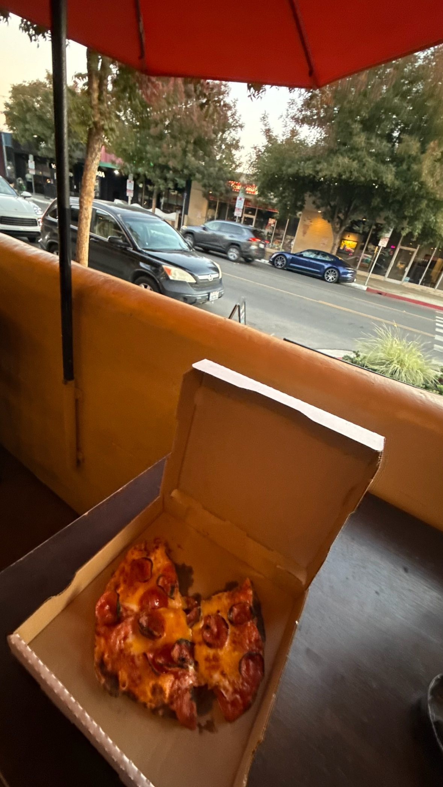
The pizza-party thread, in one frame. Mamma Mia's patio, November 5, 2026, 5:00:34 p.m. — an open box, about half a pepperoni pizza left, the red umbrella, the street right behind it. This is the world the meeting in the next box was supposed to happen in. I am not telling you whose pizza it was, because that isn't what the photo is evidence of. It's evidence of the place.
Aaron's account
She said the pizza parlor. She was at the bar.
Here is what happened, as I experienced it. The owner of the Howlin' Wolf asked to meet at a pizza party. She said she was going to be at the pizza parlor. So I was looking for her there — or, more honestly, I was looking the other way instead of looking for her, because part of me already did not trust where this was headed.
Instead, she was at the bar — with Bobby Salazar.
I am unwilling to even get anywhere near Bobby Salazar, and I have made that plain. So here is my suspicion, stated as my suspicion and not as proof of her intent: she could be setting me up — putting me in front of Bobby Salazar by telling me "pizza party" and delivering a bar. Meet me at the pizza parlor, except the meeting is really over there, in the dragon's lair, proverbially — with the one man in that scene I have said I will not be put in front of.
Maybe people will call that reading too much into a changed plan. People who have not spent two years watching labels get forced on men, doors get painted where no door exists, and rules change under their feet get to say that. I don't. When someone tells me one location and is waiting at another, with a person I am deliberately avoiding, I don't call it a mix-up and walk in smiling. I call it what it felt like: being steered.
That is the thread through this whole story, if you want it in one line. The tile man steered out of his own shop and into a criminal label. Farmers steered off land under SEDA. A candidate steered through a DUI process on a negative test. And me — steered away from a pizza parlor toward a bar I never agreed to walk into. The sizes are different. The steering is the same, and I am done pretending I don't notice it.
Chapter ElevenWhy I got out: District 3
The race I dropped, the comment I left on the record, and the pattern that made both inevitable
People ask why a man who cares this much about one district isn't running to represent it. I was. I was running for District 3 City Council — and I dropped out. Here is why, in my account: I heard a fellow candidate say that he had violated PC 311.11 and still wanted to run. Sit with that for a second. Not accused by an opponent. Said it himself, and kept running.
The decision itself came after the Mardi Gras parade on February 13th, when I watched the political figures stroll through Olive Avenue with all of the fanfare — knowing all of the facts, knowing how all of these things are applauded, including inappropriate sexuality and violation of the law — literally, in my words, having criminals representing us in government. I just didn't want to sit next to them. That is the whole platform of my withdrawal: a man can spend his life asking a city to follow its own laws, or he can take a seat beside people who treat the law as a costume. He cannot do both.
On the record: "Follow the Law"
Getting out of the race didn't get me out of the record. On August 19, 2026, I stood before the Fresno Planning Commission and said my piece at 1:49:12 of the hearing — the SEDA hearing, the one that ended in a 6–1 vote to recommend SEDA. I talked about Penal Code 374.7 and the canal litter I pick up myself — no fewer than 10 items a day at 721 E La Sierra Drive — and I closed with the only two doors I believe are actually open to a man in my position: become a whistleblower, or go down. A week later, on August 26, 2026, Nick Shirley was at the Capitol saying his version of the same sentence. Read the whole comment here: "Follow the Law" — stories.ahightower.com/pc-aug19.
And if you want to know what kind of record the voters in this district were asked to reward instead, look at the Fresno Bee's screenshot from August 23. The Bee's summary line sits right at the top: Keshia Thomas is still subject to a defamation lawsuit for alleging that former Bullard High coach Don Arax used a racial slur against her son — under the headline "Facing call to resign, Fresno trustee Keshia Thomas apologizes for racial slur accusation." Let me be exact about the legal posture, because exactness is the point: the slur allegation is alleged, and the defamation lawsuit is pending. Neither is a proven fact, and I am not presenting either as one.
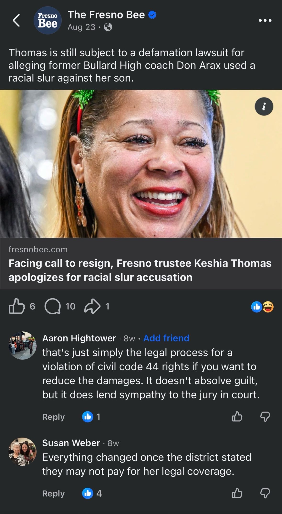
Screenshot: The Fresno Bee, August 23. "Thomas is still subject to a defamation lawsuit for alleging former Bullard High coach Don Arax used a racial slur against her son." The allegation is alleged; the lawsuit is pending. My opinion about what it means is in the text.
Now my account, labeled as my account and my opinion: Keshia Thomas destroyed a career, and directed a defense fund against allegations that the principal of the school knew were untrue at the time. She made it into the runoff for District 3 City Council — fortunately, in my view, she wasn't elected. I issued a public statement saying she was unfit for office. I did the same for Rob Fuentes, and they are still counting the details on that one. If Rob Fuentes makes it into office, then in my own scoring my efforts failed — but I'd like to think my efforts were fruitful in trying to inform the public about her malfeasance, and "malfeasance" is my word for it, my opinion, stated as such.
Nick Shirley has a name for the machine underneath this: so-called scammers being elected into office because of a feedback loop that rewards people for fraud. I tie Thomas to that loop, as my opinion, because the loop is visible from my street: make the allegation, raise the fund, run for the seat, and let anyone who objects be labeled the problem. It is the flip from the Dollar Tree doorway, scaled up to an election — Isaiah 5:20 with a campaign account.
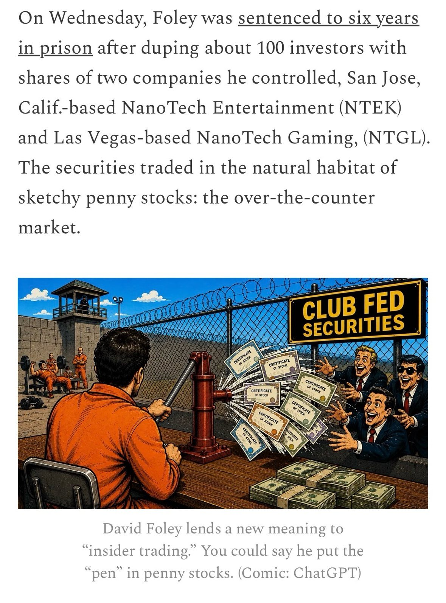
Illustration for this section — the article excerpt is real; the comic is not a news quote. The excerpt reports: "On Wednesday, Foley was sentenced to six years in prison after duping about 100 investors with shares of two companies he controlled, San Jose, Calif.-based NanoTech Entertainment (NTEK) and Las Vegas-based NanoTech Gaming, (NTGL)," in the over-the-counter market. Below it, a "CLUB FED SECURITIES" comic captioned "David Foley lends a new meaning to 'insider trading.' You could say he put the 'pen' in penny stocks. (Comic: ChatGPT)." I include the comic as illustration only.
That last screenshot is in here because it is the reason I read every other story in this piece the way I do. I have already watched a man run a fraud in the open, watched the system take years to land on him, and watched everyone who pointed early get treated as the difficult ones. Six years, about a hundred investors, two companies — and by the time the sentence arrived, the money and the years were gone. So when I tell you I don't want to sit next to them, understand: I have sat near enough to that table already. Once was enough.
ClosingWhat honest would look like
Two honest options exist, and Fresno is currently choosing a third, dishonest one.
Option one: fund Prop 36 like the voters meant it — treatment beds, assessments, court capacity — the way DUI enforcement is funded: dedicated money, renewed, with a grant number and a goal written down. If "mass treatment" was the promise, price it and pay it.
Option two: admit the state passed a felony it doesn't intend to operate, and say so out loud, so counties, officers, and the people on the sidewalk can stop pretending a door exists where there is only a painted outline of one.
The dishonest option — the current one — is to keep both fictions running: celebrate the tough law at election time, starve it at budget time, flood one nightlife district with funded enforcement after every shooting, and then act surprised when a routine Saturday-night stop in that flood zone becomes a scandal, an expedited lab test, and an apology — while, a few feet away, the other law's entire caseload quietly goes nowhere at all.
One street. Two laws. Only one of them was ever given the means to be real. Until that changes, everything else — the plans, the press conferences, the zero tolerance — is just the funded lane, running on time, past a sidewalk that is still waiting.
But you want my honest closing, in my own words, so here it is — as my account, and not as a claim that any named person here is a criminal as a proven fact: nobody wants law and order here. They want appeal to optics. They want to hand food for free to crackheads at the Dollar Tree — I photographed the cars; you saw them — and then ask why nobody wants to set up a business next to a bar called Strummers, after they've already run the Brass Unicorn's owner down the street because she can't handle all this. Kathryn Barile moved her shop across from the police credit union and the street still doesn't feel controlled, because the only law on it that was ever given money is the one that processes drivers.
So yes: I am contemplating leaving the Tower District. Not because I stopped caring about it — nobody writes a story this long about a street he's indifferent to — but because I am tired of being made out to be the bad guy who isn't welcome here for saying the laws should apply to everybody on it. Two laws. One street. I live on it. For now.
— Aaron Michael Hightower, from the High Tower District
Sources
Every fact in this story that isn't my own observation from living here traces to one of these. Read them and check me.
California DHCS — Proposition 36 implementation pageHow the state itself describes the treatment-mandated felony and the one-time $50M AB 102 infrastructure funding — the state conceding, in its own words, that the money is for building capacity that didn't exist.
Fresnoland — "Did attorney use AI in Fresno eminent domain lawsuit?" (Mar. 2, 2026)The documented spine of Chapter Seven: the eminent-domain suit against A and C Tile on McKinley Avenue, the March 2025 court order transferring ownership, the owner's testimony that relocation would cost $3.4–$7 million, and the fire sequence — Carl's Jr. destroyed Jan. 28, another city-owned building Feb. 8, the tile shop's contents Feb. 13 — with authorities suspecting arson.
High Tower District Stories — "The Taking"My earlier story on the same intersection, including City Manager Georgeanne White's on-the-record "spidey-senses" statement to the council the morning after the Carl's Jr. fire. The claims in Chapter Seven about intent and media manipulation are my account, stated there and here as mine — they are not findings of that reporting.
City of Fresno — City Manager's officeThe city's own description of the job: the city manager oversees day-to-day operations and exercises control over all departments except the City Attorney, City Clerk, and City Council. My conclusion in Chapter Eight about how that control is being used is my opinion.
YouTube — "SIT LIE SLEEP" (Aaron's video)My own unedited, roughly ten-minute video of the entire interaction at the Dollar Tree entrance, embedded in the doorway section above. It is documentation, presented as mine.
High Tower District Stories — "Follow the Law" (pc-aug19)My August 19, 2026 comment to the Fresno Planning Commission at the SEDA hearing (1:49:12 in the hearing record): Penal Code 374.7, the canal litter at 721 E La Sierra Drive, the 6–1 vote to recommend SEDA, and Nick Shirley at the Capitol on August 26, 2026.
Fresno Municipal Code § 10-2101 — the city's sit / lie / sleep / camp rule, the ordinance at issue in the Dollar Tree doorway section. Cited from the code as referenced in my account; the doorway photographs and video are my own.
The photographs throughout this story are mine, taken on the dates and times given in their captions. Every readable license plate has been blurred, and a minor's face is blurred in the Fresno Activities screenshot. The bar image in Chapter One is an AI-augmented illustration and is labeled as one where it appears; it is not a photograph and is not presented as one.
A note on method: the Fresno County figure in the fact cards — 8 of 101 Prop 36 felony cases entering treatment — is the county figure from the treatment data reported alongside the statewide analyses above, and it was the figure this story was built around. Where a number here is statewide, it is labeled statewide. The Thursday-to-Monday pattern on Olive Avenue, the bar-door economy, and the view from my side of the street are my own observations as a Tower District resident, and they're labeled as mine by the byline. The boxes marked "Aaron's account" go further, and they're boxed for a reason: the conversation with Bereket outside City Hall and what I believe about being led to it; the conclusions I relayed from Assemblymember Tangipa and my comparison to CHP protection spending for the governor; Councilmember Arias's sentence as I heard and recorded it; my belief about the city manager, the fires, and the media; and my account of what was done to the tile shop's owner — including the accusations made about him and his intent, the later "difficult" and "criminal" labels, and my belief connecting DUI funding, eminent-domain territory, and the bullet train; my account of SEDA as the council's southeast-district plan, its cancellation, its cost, and its effect on farmers and on District 3 funding; and my account of the Howlin' Wolf owner, the pizza-party meeting, and my suspicion about being put in front of Bobby Salazar — are my accounts and opinions, presented in my voice. They are not court findings, and nothing in the sourced reporting above should be read as proving them. The documented record and my account sit side by side in this story so you can weigh each for exactly what it is. The same labeling rule governs the new material: the Dollar Tree doorway, the ATM, the bus bench, the police cars, and the free-food cars are my photographs and my observations, captioned with the dates and times I recorded; my characterizations of the people in them — including the man at the doorway pretending, in my account, to be mentally ill, and my Penal Code 415 opinion about the blue-canopy vendor, which I state in the story has not been proven in a court of law — are my account. My restraining order against that vendor was filed and not granted, and has not been served, and the story says exactly that and nothing more. Kathryn Barile's name and her shop's two addresses are stated as she and the record give them; my account that she was forced to relocate is mine. The Keshia Thomas material is framed as it stands: the Arax allegation is alleged, the defamation lawsuit is pending, and my conclusions about her fitness for office are my opinion. The District 3 withdrawal, the pc-aug19 comment, and the closing statement about leaving the Tower District are my account, in my words.